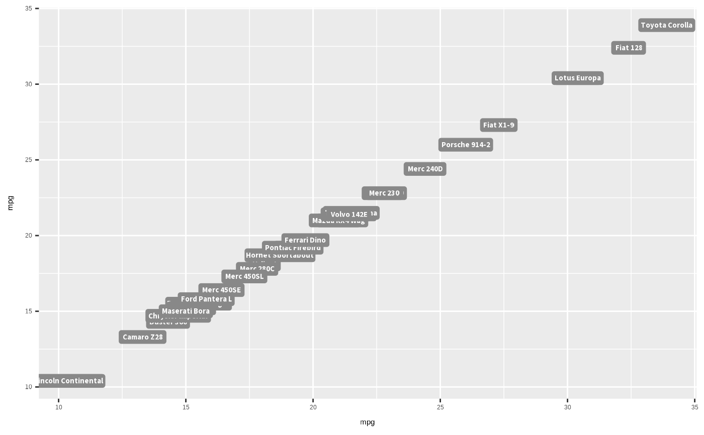

Simple wrapper for sysfonts::font_add_google() and
showtext::showtext_auto() to load the
Source Sans 3 font and
specify all plots to automatically use showtext. Use to load the default
font family for geom_text_hdx() and geom_label_hdx().
load_source_sans_3()Value
Nothing, run for side effect of loading the font and activating showtext.
See also
gghdx() for automatically running load_source_sans_3(),
along with other styling.
Examples
library(ggplot2)
p <- ggplot(
data = mtcars,
mapping = aes(
x = mpg,
y = mpg,
label = rownames(mtcars)
)
)
# font not loaded so error will be generated
try(p + geom_label_hdx())

load_source_sans_3()
p + geom_label_hdx()